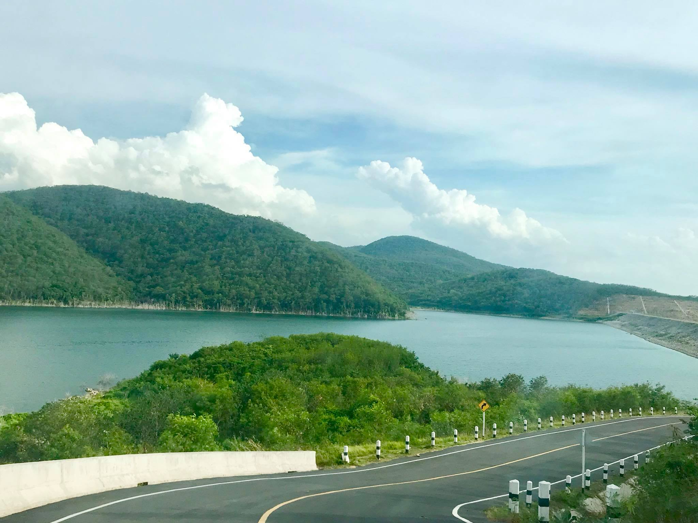

1.อ่างเก็บน้ำมวกเหล็ก

ขอบคุณรูปภาพจาก เพจ บ้านสวนรจนารีสอร์ท มวกเหล็ก
อ่างเก็บน้ำมวกเหล็ก ตั้งอยู่ในอำเภอวังม่วง จังหวัดสระบุรีค่ะ ซึ่งเป็นเขื่อนดิน กว้าง 9 เมตร สูง 44 เมตรใช้เป็นแหล่งน้ำสำหรับการผลิตน้ำประปา และกักน้ำไว้ใช้เพื่อการเกษตรในพื้นที่นั่นเองอีกทั้งอ่างเก็บน้ำมวกเหล็กยังเป็นที่เที่ยวอีกแห่งของสระบุรีด้วยค่ะ เพราะมีถนนเลียบสันเขื่อนสำหรับให้มาปั่นจักรยาน
มาเที่ยวกันนี้จ้า >>> Google Map นะคร้าบ
2.น้ำตกเจ็ดสาวน้อย
ขอบคุณรูปภาพจาก https://www.wongnai.com
น้ำตกเจ็ดสาวน้อย หากใครที่กำลังมองหา ที่เที่ยวใกล้กรุงเทพ เราขอแนะนำที่เที่ยวยอดฮิตอย่างน้ำตกเจ็ดสาวน้อย กันค่ะเป็นอีกหนึ่งใน ที่ต้องห้ามพลาดเลย จะเที่ยวค้างสักคืน หรือ ไปเช้าเย็นกลับ ก็ชิลสุดๆ ที่สำคัญสะดวกสบายมากๆ ลืมภาพการเที่ยว น้ำตก แบบลำบากไปได้เลย
มาเที่ยวกันนี้จ้า >>> Google Map นะคร้าบ
3.น้ำตกเจ็ดคต
ขอบคุณรูปภาพจาก https://mgronline.com
น้ำตกเจ็ดคต เป็นหนึ่งในน้ำตกบนเส้นทางศึกษาธรรมชาติ และท่องเที่ยวเชิงนิเวศเจ็ดคต-โป่งก้อนเส้า ตำบลชะอม อำเภอแก่งคอย จังหวัดสระบุรี โดยจะแบ่งน้ำตกเจ็ดคตนี้ตามขนาด ตั้งแต่ขนาดเล็กไปจนถึงขนาดใหญ่ เรียกได้ว่าเดินเพลินแอดสะดุดตากับ การถ่ายรูปรัวๆเลยจ้า สวยแปลกตามากๆ
มาเที่ยวกันนี้จ้า >>> Google Map นะคร้าบ
4.น้ำตกโกรกอีดก
ขอบคุณรูปภาพจาก https://www.reviewthaitravel.com และ https://www.khaoyaitravel.com
น้ำตกโกรกอีดก น้ำตกใกล้กรุงเทพ สายลุยห้ามพลาดตัวน้ำตก ตั้งอยู่ที่ ศูนย์ศึกษาธรรมชาติเจ็ดคด-โป่งก้อนเส้า แม้ว่าความลำบากในการเข้าไปที่ น้ำตกโกรกอีดก นั้นจะท้าทายแต่พอได้ไปสัมผัส กับความอลังการของน้ำตกแล้ว บอกได้คำเดียวว่า คุ้มค่าที่มาจริงๆ อลังการงานสร้างสุดๆ น้ำตกนี้จะมีน้ำตลอดทั้งปี แต่แน่นอนว่าจะสวยที่สุดในตอนที่น้ำมาก
มาเที่ยวกันนี้จ้า >>> Google Map นะคร้าบ
5.ฟาร์มโคนม-เดนมาร์ค
ขอบคุณรูปภาพจาก https://mgronline.com
ฟาร์มโคนม-เดนมาร์ค เป็นสถานที่ท่องเที่ยวเชิงเกษตรเพื่อให้นักท่องเที่ยวชื่นชม ความงามของธรรมชาติ มีกิจกรรมสำหรับผู้รักการผจญภัย เช่น การขับรถเอทีวี เหมาะสำหรับทุกเพศทุกวัยในอัตราค่าบริการที่ถูกและคุ้มค่านักท่องเที่ยวจะได้ชมฟาร์ม โคนมไทย-เดนมาร์ก เช่น รีดนมโค การแสดงม้า และกิจกรรม ดื่มนมชมดาว กิจกรรมคาวบอย
มาเที่ยวกันนี้จ้า >>> Google Map นะคร้าบ
6.วัดป่าสว่างบุญ
ขอบคุณรูปภาพจาก https://thai.tourismthailand.org
วัดป่าสว่างบุญ ที่เที่ยวสระบุรี น่าศรัทธาเลื่อมใส สวยงามสุดๆ กับเจดีย์ 500 ยอด ที่เที่ยวสระบุรี ใกล้ ที่เที่ยวกรุงเทพ แค่นิดเดียว ผนังด้านในของเจดีย์องค์ประธานจะประดับด้วยกระจกทับทิม และมีภาพพระธาตุเจดีย์สำคัญต่างๆ ทั่วประเทศไทย ประดับไว้ด้านบน ครบทั้ง 500 องค์เลย เป็น สถานที่ท่องเที่ยวสระบุรี ที่เงียบสงบ เหมาะแก่การมาชมความสวยงาม และมาปฎิบัติธรรม ทำให้เราจิตใจสงบ พร้อมลุยกับสิ่งต่างๆในชีวิตแบบมีสติเลย ได้ชมทั้งสิ่งสวยงาม ได้ทั้งข้อคิดดีๆแน่นอน
มาเที่ยวกันนี้จ้า >>> Google Map นะคร้าบ
7.วัดพระพุทธฉาย
ขอบคุณรูปภาพจาก https://thailandtourismdirectory.go.th และ https://thai.tourismthailand.org
วัดพระพุทธฉาย เป็นวัดที่ตั้งอยู่บนภูเขาหินเขาพุทธฉายที่มีชื่อเสียง หนึ่งใน ที่เที่ยวสระบุรี ที่มีชื่อเสียง ตั้งอยู่ที่ อำเภอเมืองสระบุรี สระบุรีที่เที่ยว อยู่ภายในมณฑปสองยอดบนไหล่ภูเขา มีธรรมชาติป่าสมบูรณ์ ชมวิวแบบเพลินๆ ด้านบนเขาลมพัดเย็นสบาย สูดอากาศบริสุทธิ์ได้เต็มปอดเลย ได้สักการะสิ่งมงคล ได้ชมธรรมชาติอันสวยงาม คุ้มค่ากับการมา เที่ยวสระบุรี เยี่ยมจริงๆ
มาเที่ยวกันนี้จ้า >>> Google Map นะคร้าบ
8.ตลาดโบราณเสาไห้
ขอบคุณรูปภาพจาก https://www.thailandhotelforums.com
ตลาดโบราณเสาไห้ เที่ยวสระบุรี เที่ยวตลาดชิมชอปใช้ สุดฟินอินสระบุรี ตลาดโบราณอายุนับร้อยปี ที่ยังคงสภาพวิถีชีวิตของชาวบ้านในท้องถิ่นที่หาชมได้ยาก มีอาหารเจ้าเด็ด อร่อยอยู่มากมาย ตลาดโบราณเสาไห้ ตั้งอยู่ริมแม่น้ำป่าสัก ในมาเที่ยวต้องชิมแล้วนะ เดียวจะหาว่าไม่บอก พร้อมแล้วลุยเลยจ้า
มาเที่ยวกันนี้จ้า >>> Google Map นะคร้าบ
9.ตลาดหัวปลี
ขอบคุณรูปภาพจาก https://www.Shutterstock.com
ตลาดหัวปลี ที่เที่ยวสระบุรี ตลาดชุมชนชิมชอปใช้แบบเพลินๆ เป็นตลาดชุมชนเกษตรในบรรยากาศสบายๆ พร้อมจุดถ่ายรูปมากมายหลายจุดด้วยกัน มีทั้งบริเวณของต้นไม้ สวนไผ่ และนาบัว ตลาดยอดฮิตที่ใครมาสระบุรี คือต้องแวะมา ซื้อของติดไม้ติดมือจ้า ได้ช้อปปิ้งกันแบบอิ่มเต็มท้อง และยังได้อุดหนุนสินค้าจากชุมชนอีกด้วย ตลาดหัวปลี แห่งนี้จะพลาดได้ยังไง พุ่งตัวกันมาโลด
มาเที่ยวกันนี้จ้า >>> Google Map นะคร้าบ
10.พิพิธภัณฑ์บ้านไร่กาแฟ
ขอบคุณรูปภาพจาก https://www.wongnai.com
พิพิธภัณฑ์บ้านไร่กาแฟ อีกหนึ่งสถาน ที่ท่องเที่ยวสระบุรี สุดเก๋ แห่งสระบุรี ตลาดโรงคั่ว และ พิพิธภัณฑ์บ้านไร่กาแฟ ตั้งอยู่ใน อำเภอหนองแซง จังหวัดสระบุรี งสถานที่ทั้งสองแห่งตั้งอยู่ในบริเวณเดียว ภายในมีร้านอาหาร ร้านกาแฟ สินค้าโอท็อปของชาวบ้าน รวมทั้งได้ตื่นตาไปพิพิธภัณฑ์บ้านไร่กาแฟ ที่จัดแสดงข้าวของเครื่องใช้ของเก่าโบราณที่หาชมได้ยาก ลุยกันเลย
มาเที่ยวกันนี้จ้า >>> Google Map นะคร้าบ
11.สวนบิ๊กเต้
ขอบคุณรูปภาพจาก https://www.facebook.com
สวนบิ๊กเต้ สวนดอกเบญจมาศ จุดถ่ายรูปดอกไม้ที่สวยงามระดับต้นๆของประเทศ หนึ่งในสถาณ ที่เที่ยวสระบุรี ควรค่าแก่การมารัวชัตเตอร์มากๆ สวนดอกเบญจมาศบิ๊กเต้ ตั้งอยู่ในอำเภอมวกเหล็ก สถานที่ท่องเที่ยวสระบุรี เป็นแหล่งปลูกดอกเบญจมาศที่ใหญ่ที่สุดอีกแห่งนึ่งของมวกเหล็ก เรียกได้ว่าถ่ายภาพกันสนุก สำหรับคนชอบถ่ายภาพดอกไม้ ทั้งสายพอตเทรตและคอมาโคร หามุมถ่ายได้แบบไม่มีเบื่อ มาถ่ายรูปกัน
มาเที่ยวกันนี้จ้า >>> Google Map นะคร้าบ
12.ไร่องุ่นภูวพันธุ์
ขอบคุณรูปภาพจาก เพจ ไร่องุ่นภูนวพันธุ์
ไร่องุ่นภูนวพันธุ์ เป็นอีกหนึ่งแหล่งท่องเที่ยวที่มีความหน้าสนใจ ซึ่งไร่แห่งนี้มีการปลูกองุ่นสายพันธุ์ดี ที่มีรสชาติอร่อย นอกจากจะมีผลองุ่นสดเเล้ว ทางไร่ยังได้นำองุ่นสดมาแปรรูปเป็นผลิตภัณฑ์ต่างๆด้วย รวมถึงทางสวนเอง ก็มีผลิตภัณฑ์แปรรูปองุ่นทั้ง องุ่นงวน น้ำองุ่น และอื่นๆ ให้เลือกช้อปกันมากมายอีก ถ่ายรูปสไตล์ฟสร์มสุดเก๋ ชิมองุ่นแสนหวาน กันเลยจ้า
มาเที่ยวกันนี้จ้า >>> Google Map นะคร้าบ
13.เขื่อนป่าสักชลสิทธิ์
ขอบคุณรูปภาพจาก https://travel.kapook.com และ https://th.openrice.com
ขื่อนป่าสักชลสิทธิ์ ฝั่งจังหวัดสระบุรี ชมวิวสันเขื่อนอันสวยงาม เที่ยวสระบุรี กับบรรยากาศสุดแสนชิล รับลมชมวิวที่สันเขื่อน โดยฝั่งสระบุรี ชมวิวริมสันเขื่อนอันสวยงาม ใครชอบบรรยากาศดีๆในยามเช้า และ ยามบ่ายคล้อย วิ่งออกกกลังกาย หรือปั่นจักรยาน ชิลๆคือตอบโจทย์มากๆเลยจ้า ชิลสุดๆที่สันเขื่อนๆถ้ามาในช่วงพระอาทิตย์ตกดินคือสุดแสนโรแมนติกที่สุดเลยจ้า ควงคู่กันมาเก๋สุดๆ ประทับใจไม่รู้ลืมแน่นอนจ้า
มาเที่ยวกันนี้จ้า >>> Google Map นะคร้าบ
14.หอวัฒนธรรมพื้นบ้านไทยวน
ขอบคุณรูปภาพจาก https://saraburi.mots.go.th
หอวัฒนธรรมพื้นบ้านไทยวน สถานที่เที่ยวสระบุรี แบบย้อนวันวานสไตล์วินเทจ เพื่อนๆ ที่สนใจจะไปพักผ่อนและสัมผัสบรรยากาศแบบธรรมชาติริมแม่น้ำป่าสักและเรียนรู้ถึงวิถีชีวิตวัฒนธรรมและขนบธรรมเนียมประเพณีของชาวไทยวนและยังได้รับประทานอาหารแบบขันโตกพร้อมการต้อนรับที่สุดแสนประทับใจอีกด้วย อบอุ่นเป็นกันเองสุดๆ แถมได้รูปสวยๆกลับไปเพี้ยบแน่นอนเลยจ้า
มาเที่ยวกันนี้จ้า >>> Google Map นะคร้าบ
15.มวกเหล็ก ATV


ขอบคุณรูปภาพจาก เพจ มวกเหล็ก เอทีวี
มวกเหล็ก ATV สระบุรี เที่ยวแนวผจญภัยโดยใจคนเมืองทิพย์ ต้องมวกเหล็ก ATV ที่มีกิจกรรมสุดแสนสนุก อย่างการขับรถเอทีวีเป็นกิจกรรมที่ตื่นเต้น ท้าทาย ผจญภัยในรูปแบบใหม่ ยอดฮิต ขับรถลัดเลาะไปตามป่าเขาที่สวยงามในพื้นที่รอบมวกเหล็กเอทีวี หลายกิโลเมตร แบบเพลินสดๆ เปลี่ยนบรรยากาศมาในแนวผจญใจเปิดประสบการณ์การท่องเที่ยว คูลสุดไปเลยเด้อ
มาเที่ยวกันนี้จ้า >>> Google Map นะคร้าบ